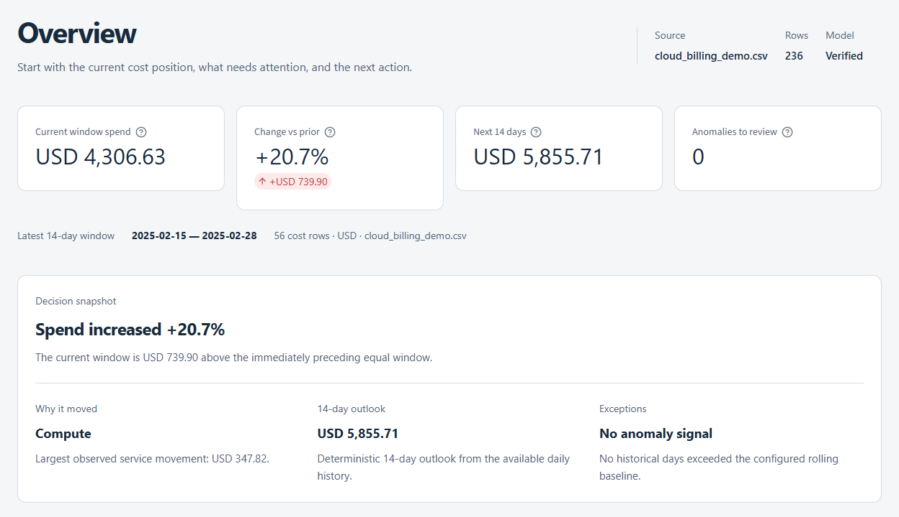

Make the source usable.
Map fields, normalize the rows, and reconcile totals. Quality checks surface missing values, duplicates, and currency conflicts before analysis.
OUTPUT / A checked cost modelFINOPS · ANALYSIS TO ACCOUNTABILITY
Turn cloud billing into a cost story you can defend. Reconcile the source, investigate the movement, and take the proof into every decision.
Synthetic demo. No sign-in. Your own exports belong in the desktop app.

AWS Azure Google Cloud CSV, Excel & Parquet
01 / THE WORKFLOW
One reviewable path from a billing export to an owned decision. Each step keeps the context the next person needs.
Map fields, normalize the rows, and reconcile totals. Quality checks surface missing values, duplicates, and currency conflicts before analysis.
OUTPUT / A checked cost modelCompare equal periods. Separate observed spend from a modeled forecast. Investigate service drivers with their evidence and limits visible.
OUTPUT / A grounded cost storyRecord an owner, a due date, and a disposition. Export a decision receipt, then review supplied actuals with the original assumptions attached.
OUTPUT / An accountable decision02 / THE DIFFERENCE
Cloud consoles bring provider depth. Costavow connects the finance-to-engineering handoff: what was observed, what someone decided, and what the later evidence supports.
Open the decision registerPortable HTML. Readable without the app.
03 / ENGINEERED TO BE INSPECTED
Financial calculations are deterministic. Optional AI explains the fact pack; it does not calculate the totals. The default summary works without an API key.
The web demo uses synthetic data. The Windows workspace handles your own files locally. Cloud imports are read-only; optional AI and cloud storage involve the providers you configure.
Forecasts remain estimates. Billing movement alone does not establish root cause or savings. Quality warnings and outcome caveats stay visible in the handoff.
BEFORE YOU OPEN IT
Three synthetic scenarios: a healthy baseline, a source with blocking quality issues, and a forecast that reveals future risk. Explore the analysis and export evidence. The hosted demo has no file upload or cloud connection controls; edits to demo decisions stay in your session.
No. Provider consoles remain the source for billing detail, resource telemetry, and native optimization recommendations. Costavow provides a separate place to reconcile exports and make the decision trail portable across teams.
Download the Windows x64 ZIP from GitHub Releases, extract it, and run Costavow.exe. You can import CSV, Excel, or Parquet, or configure a supported provider export. The current executable is unsigned; review the release notes and checksum before running it.
Costavow is an independently built FinOps engineering project. Its source, tests, design decisions, and limitations are available on GitHub. It is not a managed billing service and does not change your cloud resources.
EVERY COST CLAIM NEEDS A TRAIL.